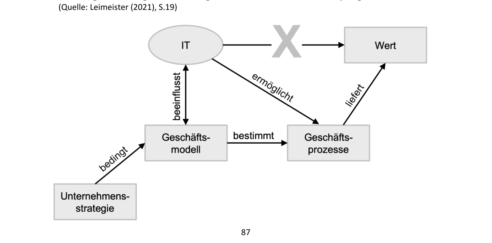
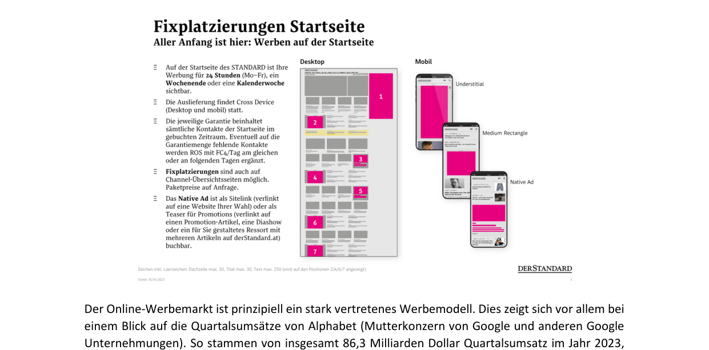
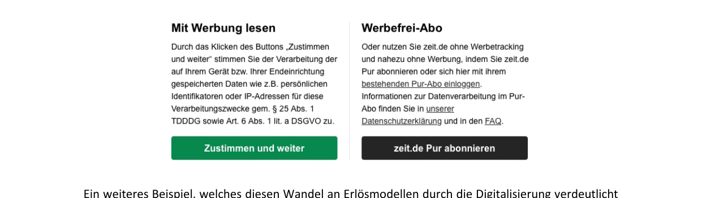
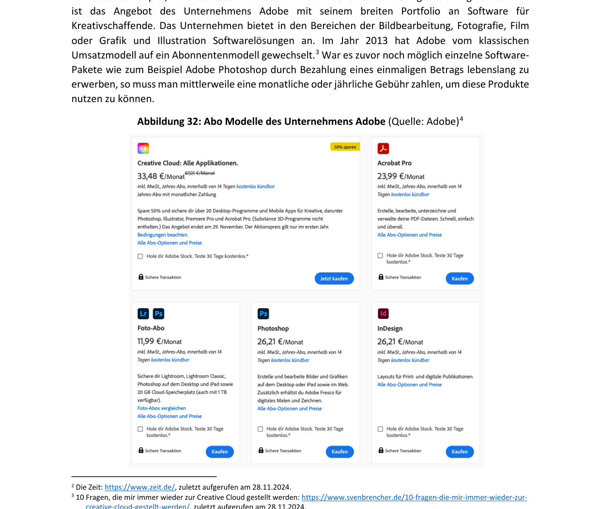
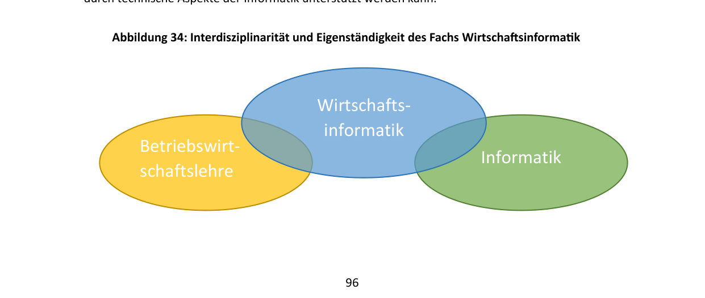
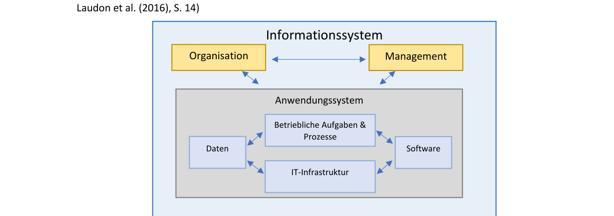
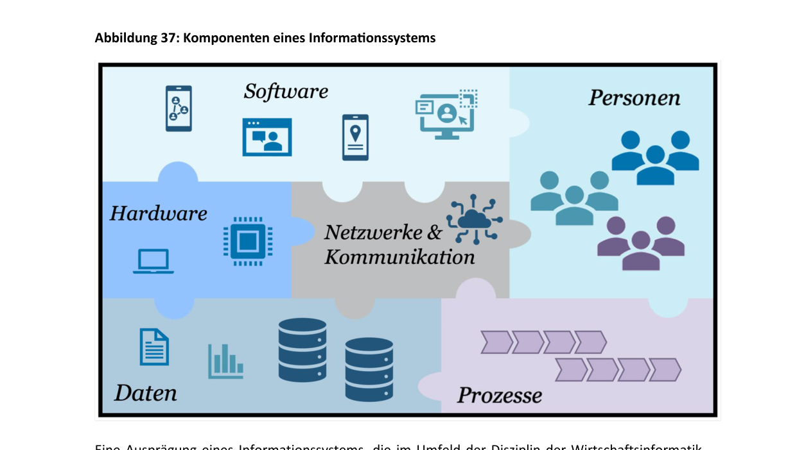

Глава 4: Цифровизация и сетевое взаимодействие экономики и общества (Digitalisierung und Vernetzung von Wirtschaft und Gesellschaft)
Если вспомнить пример из первой главы и представить типичное утро рабочего дня, становится ясно, как быстро мы вступаем в контакт с технологиями. Нас будит будильник, настроенный на оптимальную фазу сна на основе цифровых измерений. Мы чистим зубы «умной» зубной щеткой, которая распознает, достаточно ли тщательно и с правильным ли давлением мы их почистили. За завтраком мы слушаем музыку через стриминговый сервис на смартфоне, который автоматически подключается к беспроводной акустической системе. Наконец, интеллектуальная система отопления фиксирует, что мы покинули квартиру, и на основе прогноза погоды и нашего личного календаря устанавливает оптимальную температуру, чтобы к нашему возвращению дома не было холодно. Мы повсеместно соприкасаемся с цифровыми системами. Без информационно-коммуникационных технологий это было бы невозможно.
Эта тенденция продолжается и в корпоративном мире: в супермаркетах системы автоматически фиксируют остатки товаров и при необходимости заказывают их. Службы доставки используют системы позиционирования и уведомлений, чтобы оперативно сообщать клиентам о своем местоположении. В производстве цифровые системы управляют технологическими процессами на заводе, быстро выявляют проблемы и реагируют на них. Во всех этих сферах используются различные цифровые системы для автоматизации, оптимизации или поддержки рабочих процессов.
Сегодня трудно найти сферу, в которой человек вообще не соприкасался бы с технологиями. Мы часто этого даже не замечаем. Английский термин «ubiquitous computing» (повсеместные / вездесущие вычисления — Allgegenwärtigkeit von Rechensystemen) сегодня актуален как никогда. Именно эти вопросы изучает дисциплина «Экономическая информатика» (Wirtschaftsinformatik). Она исследует, как технологии могут поддерживать нас и какое влияние они оказывают на общество, экономику и личную жизнь.
4.1 Цифровая трансформация (Digitale Transformation)
Применение технологий меняет то, как предприятия ведут бизнес. Это касается управления внутренними процессами для повышения эффективности, взаимодействия с клиентами и создания новых продуктов и услуг.
Возможности изменений на предприятии можно проиллюстрировать с помощью трех измерений цифровизации (по данным Leimeister 2021):
Потребитель / Клиент (externer Fokus - frontstage)
^
|
| [Умные продукты и услуги]
| (Smarte Produkte)
| /
| /
| /
| /
| /
| /
| L
+---------------------------------> Бизнес-процессы
(interner Fokus - backstage)
- Цифровые процессы (digitale Prozesse): Внутренний фокус предприятия («за кулисами» — backstage). Направлен на эффективное использование ресурсов для создания добавочной стоимости. Бизнес-процессы поддерживаются, расширяются и управляются цифровыми системами. Возникает цифровой бизнес-процесс.
- Цифровой пользователь / потребитель (digitaler Nutzer / Konsument): Внешний фокус предприятия (frontstage). Представляет собой связь между клиентами и компанией. Включает разработку предложений с учетом требований и потребностей пользователей (физических лиц, других компаний или госструктур). Цифровизация позволяет точнее и эффективнее учитывать индивидуальные пожелания клиентов.
- «Умные» продукты и услуги (smarte Produkte und Dienstleistungen): Результат создания добавочной стоимости, расширенный за счет технологий. Это может быть как простое цифровое дополнение (например, инструкция по сборке конструктора Lego в формате PDF вместо бумажной версии), так и глубокое изменение клиентского опыта (интерактивные цифровые миссии для наборов Lego, меняющие процесс игры и повышающие привязанность к продукту).
Слияние этих трех измерений формирует цифровой бизнес (Digital Business).
Бизнес-процессы
Основой цифровизации процессов является их четкое описание.
Фиксация и описание процесса в цифровой системе называется документированием (Dokumentation). Визуальное представление процесса называют моделью процесса (Prozessmodell). Она помогает сотрудникам (например, новым стажерам) быстро понять, как устроены закупки, сбыт или иные функции.
- Пример цифрового процесса: Оформление онлайн-заказа в Thalia (www.thalia.at). Заказ автоматически обрабатывается системой, склад получает уведомление о необходимости собрать товар, сотрудники проверяют его наличие, готовят к отправке или выдаче в магазине, а клиент получает автоматические уведомления о статусе. Процесс завершается выдачей или доставкой товара, после чего система помечает заказ как выполненный.
- Пример цифровизации работы с клиентами: Использование 3D-сканеров стопы в обувной сети Humanic (www.humanic.net). Сканер создает трехмерное изображение стопы покупателя и сохраняет его в личном кабинете. При онлайн-заказе или покупке в магазине система автоматически сверяет форму стопы с выбранной моделью обуви, подбирая идеальный размер и избавляя клиента от необходимости примерки и возврата товаров.
4.2 Новые продукты, услуги и бизнес-модели (Neue Produkte, Dienstleistungen...)
Цифровизация изменила привычные нам вещи: покупка билета на общественный транспорт в Вене осуществляется через приложение Wiener Linien; покупка продуктов питания — через онлайн-доставку (Gurkerl, Flink, Mjam) или интернет-магазины супермаркетов (Billa, Hofer, Interspar). Технологии создают новые бизнес-модели.
Связь между использованием IT и созданием ценности (по Leimeister 2021) представлена на схеме:

IT позволяет масштабировать ценность: например, охватывать больше клиентов или предлагать индивидуализированные продукты.
- Пример трансформации бизнес-моделей в музыкальной индустрии: В 2000 году доминировала продажа физических носителей (CD). Компания Apple совершила революцию, создав связку из плеера iPod и магазина iTunes Store, где можно было легально покупать отдельные песни вместо целых альбомов. Позже Spotify снова изменил эту модель, предложив вместо покупки треков потоковую трансляцию (стриминг) по подписке (Abonnentenmodell), предоставив миллионам пользователей доступ ко всей мировой библиотеке музыки за фиксированную ежемесячную плату.
Цифровые бизнес-модели
- Интернет-магазин (Webshop): прямая продажа товаров клиентам (Amazon.de, Zalando.de).
- Онлайн-маркетплейс / Торговая площадка (Online-Handelsplatz): платформа, предоставляющая среду для встреч покупателей и продавцов (включая частных лиц), где владелец площадки берет комиссию или плату за размещение объявлений (willhaben.at, eBay.de).
- Социальная сеть (soziales Netzwerk): виртуальное пространство для общения пользователей (Facebook, X, LinkedIn), зарабатывающее в основном на продаже рекламных площадей.
Типы компаний по присутствию в сети
- Pure-Play: компании, работающие исключительно в интернете и не имеющие физических филиалов для обслуживания клиентов (интернет-магазины, маркетплейсы).
- Clicks and Mortar: компании, сочетающие традиционные физические магазины с цифровым присутствием (веб-сайт, онлайн-магазин, мобильное приложение), например, книжная сеть Thalia.
Источники доходов в интернете (Erlösmodelle)
Две основные модели получения доходов в эпоху цифровизации:
-
Рекламная модель (Werbemodell): Сайт предоставляет бесплатный контент или сервисы (Google, социальные сети, поисковые порталы Geizhals или Willhaben) для привлечения большого числа посетителей, а зарабатывает на показе рекламы рекламодателей.
- AdWords: продажа ключевых слов при поиске (Google).
- AdSense: размещение контекстной рекламы на сторонних ресурсах.
- Баннерная реклама (Bannerwerbung).
-
Модель подписки (Abonnentenmodell): Взимание регулярной (ежемесячной/ежегодной) платы за доступ к части или всем услугам компании (Netflix, Spotify, подписки на цифровые версии газет).
- Пример перехода на модель подписки: Компания Adobe (ПО для работы с графикой и видео) в 2013 году полностью свернула продажу бессрочных лицензий на свои программы (Photoshop, Premiere) за разовую плату и перешла на модель подписки Creative Cloud, требующую ежемесячных платежей.



4.3 Интернет как платформа для предприятий (Das Internet als Plattform...)
Центральным элементом цифровизации является Интернет.
Отличие Интернета от World Wide Web (WWW)
В повседневной жизни эти понятия часто используют как синонимы, что неверно:
- Интернет (Internet) — это глобальная физическая сеть (инфраструктура). Через нее работают многие службы: электронная почта (E-Mail), мессенджеры (WhatsApp), файловые хранилища и World Wide Web.
- World Wide Web (WWW / Web) — это информационная служба (приложение), работающая поверх инфраструктуры Интернета. Она позволяет представлять информацию в виде веб-страниц, осуществлять транзакции и искать данные. Браузер (Web-Browser) служит интерфейсом доступа к WWW.
WWW был изобретен Тимом Бернерсом-Ли в 1989 году во время его работы в CERN (Женева). В 1990 году он опубликовал предложение по систематизации информации в сети — «Information Management: A Proposal».
Три фундаментальные технологии, лежащие в основе работы WWW:
- HTTP (Hypertext Transfer Protocol): Протокол передачи гипертекста. Задает правила, по которым браузер запрашивает файлы у сервера, а сервер их отправляет.
- HTML (Hypertext Markup Language): Язык разметки гипертекста. Используется для структурирования и отображения контента веб-страниц в браузере.
- URL (Uniform Resource Locator): Единый указатель ресурса. Уникальный адрес, используемый для нахождения информации в сети.
Связующими элементами веб-страниц являются гиперссылки (Hyperlinks / Links), которые ведут на другие ресурсы, создавая единую сеть документов.
Клиент-серверная архитектура (Client-Server-Architektur)
Браузер отправляет запрос (Request) серверу. Сервер (Server) — это компьютер, физически установленный в серверной комнате и ожидающий запросов из сети. На нем работает специальное программное обеспечение (серверное ПО — Server Software), которое обрабатывает запрос и отправляет браузеру ответ (Response), содержащий HTML-код веб-страницы или сообщение об ошибке.
- Клиентов (Clients): запрашивают услуги или данные (например, веб-браузер).
- Серверов (Servers): предоставляют услуги или данные клиентам.
Возможность предоставления услуг в цифровой сети формирует интернет-экономику (Internetökonomie) — сферу экономической деятельности, использующую Интернет для проведения транзакций и создания ценности.
- Пример: Портал Refurbed (www.refurbed.at) предоставляет цифровой маркетплейс для продажи восстановленной электроники. Сама платформа не владеет товарами, она объединяет предложения профессиональных продавцов и предоставляет интерфейс для покупателей, гарантируя безопасность сделки. Аналогичным маркетплейсом является австрийский портал объявлений Willhaben (www.willhaben.at).
4.4 Экономическая информатика как комплексная дисциплина (Wirtschaftsinformatik...)
Экономическая информатика (Wirtschaftsinformatik) изучает проектирование информационных систем, вопросы управления технологиями в бизнесе и этические последствия их внедрения.
Междисциплинарный характер дисциплины
Экономическая информатика находится на стыке двух наук: экономики предприятия (Betriebswirtschaftslehre) и информатики (Informatik).

В зависимости от угла зрения информационные системы изучаются в рамках двух подходов (перспектив):
-
Технический подход (техническая перспектива — technische Sichtweise): включает дисциплины:
- Управление производством (Produktionsmanagement / Operations Management): управление процессами производства, логистическими цепочками (Supply Chain) и запасами.
- Информатика (Informatik): разработка ПО (Software Engineering), семантическая паутина (Semantic Web), проектирование баз данных и алгоритмов.
- Наука о данных (Data Science): работа с массивами данных сверхбольших объемов (Big Data / Open Data), статистика, машинное обучение и искусственный интеллект (AI/ML) для прогнозирования и принятия решений.
-
Поведенческий подход (поведенческая перспектива — verhaltenswissenschaftliche Sichtweise): рассматривает влияние систем на человека и общество. Включает дисциплины:
- Экономика предприятия (Betriebswirtschaftslehre): использование технологий для повышения эффективности процессов и создания ценности, вопросы управления (Management), кибербезопасность, соблюдение законов о защите данных (Datenschutz).
- Социология (Soziologie): влияние групп и организаций на проектирование систем и обратное влияние систем на общество.
- Психология (Psychologie): человек как центральный компонент систем. Проектирование с учетом эмоций и потребностей людей, этические вопросы внедрения технологий, концепции цифрового гуманизма (Digital Humanism) и этичных вычислений (Ethical Computing).
Прикладные и информационные системы
- Прикладная система / Прикладная программа (Anwendungssystem): Состоит из программного обеспечения (приложений — Anwendungssoftware), обрабатываемых данных (в базе данных) и аппаратной инфраструктуры (серверы, компьютеры), предназначенных для решения конкретной прикладной задачи (например, программа бухгалтерского учета, складская программа, Excel). В корпоративном контексте прикладные системы часто требуют индивидуальной адаптации (кастомизации) под нужды компании, что является сложным и дорогостоящим процессом.
- Информационная система (Informationssystem):

Человек является главным элементом информационной системы, так как именно люди создают и потребляют информацию, обрабатываемую машинами.
Компоненты информационной системы:
- Программное обеспечение (Software).
- Аппаратное обеспечение (Hardware).
- Сети и коммуникации (Netzwerke & Kommunikation).
- Данные (Daten).
- Процессы (Prozesse).
- Люди / Персонал (Personen).
ERP-системы (Enterprise-Resource-Planning-System)
Классическим примером комплексной корпоративной информационной системы является ERP-система.

- Пример ERP-системы: Продукты немецкой компании SAP (www.sap.com) — одного из крупнейших разработчиков корпоративного ПО в мире (создана в 1972 году). Продукты компании (SAP R/3, SAP ERP, SAP Business Suite, современная версия — SAP S/4HANA) используются тысячами предприятий по всему миру.
- Другие виды корпоративных систем:
- CRM-системы (Customer-Relationship-Management): управление взаимоотношениями с клиентами.
- SCM-системы (Supply-Chain-Management): управление цепочками поставок.
- BI-системы (Business-Intelligence): сбор и аналитика данных для принятия управленческих решений.
🎓 Разбор экзаменационных вопросов и ловушек (Prüfungsfallen) по Главе 4
- Тим Бернерс-Ли в 1989 году изобрел World Wide Web (WWW), работая в CERN.
- Он НЕ изобретал Интернет. Интернет как физическая сеть сетей существовал до WWW и служит инфраструктурой (платформой), на которой базируется WWW.
- Экзаменационный вопрос: Утверждение «Tim Berners-Lee hat... das Internet erfunden» является НЕВЕРНЫМ.
Ловушка 2: Значение IP и его назначение (На примере Aufgabe 8d)
- IP расшифровывается как Internet Protocol (а не Identification Protocol).
- IP-адрес используется для однозначной идентификации технических устройств (компьютеров, узлов, серверов) в сети, а не конкретных людей (Personen).
- Экзаменационный вопрос: Утверждение «Das Internet verwendet... das "Identification Protocol (IP)" um... Personen in einem Netzwerk zu identifizieren» является НЕВЕРНЫМ.
Ловушка 3: Междисциплинарный характер и перспективы Wirtschaftsinformatik (На примере Aufgabe 4)
- Экономическая информатика находится на стыке Betriebswirtschaftslehre (BWL) и Informatik. Она не связана напрямую с политологией (Politikwissenschaft) или биологией (Biologie).
- Существуют только две ключевые перспективы дисциплины:
- Техническая (technische Sichtweise): включает Produktionsmanagement, Informatik и Data Science.
- Поведенческая (verhaltenswissenschaftliche Sichtweise): включает Betriebswirtschaftslehre (BWL), Soziologie и Psychologie.
- Экзаменационный вопрос: Утверждение о наличии «биологической перспективы» является НЕВЕРНЫМ. Утверждение о связи с политологией — НЕВЕРНЫМ.
Ловушка 4: Измерения цифровизации (На примере Aufgabe 12)
- Три измерения цифровизации (по Leimeister):
- Внутренний фокус (interner Fokus / backstage): цифровые бизнес-процессы.
- Внешний фокус (externer Fokus / frontstage): цифровые пользователи/клиенты.
- Результат (Output / Ergebnis): «умные» (smarte) продукты и услуги.
- Экзаменационный вопрос: Утверждение о том, что измерениями цифровизации являются «мобильные устройства, серверы и облачные вычисления», является НЕВЕРНЫМ (это компоненты IT-инфраструктуры, а не измерения цифровизации).